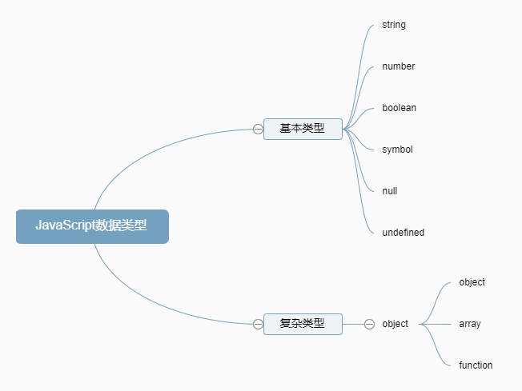

JavaScript的数据类型一共有7种。其中，基本类型有string，number，boolean，symbol，null，undefined；复杂类型有object，复杂类型是由基本类型组成的。

typeof
typeof运算符可以返回一个值的数据类型。
数值、字符串、布尔值、函数、undefined分别返回number、string、boolean、function、undefined。
null、对象、数组均返回object。1
2
3
4
5
6
7
8
9typeof 123 // "number"
typeof '123' // "string"
typeof false // "boolean"
function f() {}
typeof f // "function"
typeof undefined // "undefined"
typeof {} // "object"
typeof [] // "object"
typeof null // "object"
instanceof运算符可以区分数组和对象。1
2
3
4
5var o = {};
var a = [];
o instanceof Object // true
a instanceof Array // true
数值
JavaScript内部，所有数字都以64位浮点数形式储存，整数也是如此。1
1 === 1.0 // true
由于浮点数不是精确的值，所以涉及到小数的比较和运算要特别小心。1
2
3
4
50.1 + 0.2 === 0.3 // false
0.3 / 0.1 // 2.9999999999999996
(0.3 - 0.2) === (0.2 - 0.1) // false
数值精度
绝对值小于2的53次方的整数，即-2^53^到2^53^，都可以精确表示。由于2的53次方是一个16位的十进制数值，所以简单的法则就是，JavaScript 对15位的十进制数都可以精确处理。1
2
3
4
5
6Math.pow(2, 53)
// 9007199254740992
// 多出的三个有效数字，将无法保存
9007199254740992111
// 9007199254740992000
大于2的53次方以后，多出来的有效数字（最后几位）都会无法保存。
数值的表示方法
JavaScript 的数值有多种表示方法，可以用字面性质直接表示，也可以用科学计数法表示：1
2
3
4123e3 // 123000
123e-3 // 0.123
-3.1E+12 // -3100000000000
.1e-23
以下两种情况，JavaScript 会自动将数值转为科学计数法表示：
小数点前的数字多于21位
1
2
3
4
51234567890123456789012
// 1.2345678901234568e+21
123456789012345678901
// 123456789012345680000小数点后的零多于5个
1
2
30.0000003 // 3e-7
0.000003 // 0.000003
数值的进制
JavaScript 对整数提供四种进制的表示方法：十进制、二进制（0b开头）、八进制（0开头）、十六进制（0x开头）
- 十进制：没有前导0的数值。
- 二进制：有前缀0b或0B的数值。
- 八进制：有前缀0o或0O的数值，或者有前导0、且只用到0-7的八个阿拉伯数字的数值。
- 十六进制：有前缀0x或0X的数值。
默认情况下，JavaScript 内部会自动将八进制、十六进制、二进制转为十进制。1
2
30xff // 255
0o377 // 255
0b11 // 3
如果八进制、十六进制、二进制的数值里面，出现不属于该进制的数字，就会报错。1
2
30xzz // 十六进制，由于出现z报错
0o88 // 八进制，由于出现8报错
0b22 // 二进制，由于出现2报错
通常来说，有前导0的数值会被视为八进制，但是如果前导0后面有数字8和9，则该数值被视为十进制。1
20888 // 888
0777 // 511
前导0表示八进制，处理时很容易造成混乱。ES5 的严格模式和 ES6，已经废除了这种表示法，但是浏览器为了兼容以前的代码，目前还继续支持这种表示法。
特殊数值
正零和负零
JavaScript 内部实际上存在2个0：一个是+0，一个是-0，区别就是64位浮点数表示法的符号位不同。它们是等价的。
几乎所有场合，+0和-0都会被当作正常的0。
唯一有区别的场合是，+0或-0当作分母，返回的值是不相等的。1
2
31 / +0 // +Infinity
1 / +0 // -Infinity
(1 / +0) === (1 / -0) // false
NaN
NaN是 JavaScript 的特殊值，表示“非数字”1
2
3
4
55 - 'x' // NaN
0 / 0 // NaN
typeof NaN // 'number'
NaN不等于任何值，包括它本身。
NaN与任何数（包括它自己）的运算，得到的都是NaN。
Infinity
Infinity表示“无穷”，用来表示两种场景：
一种是一个正的数值太大，或一个负的数值太小，无法表示；另一种是非0数值除以0，得到Infinity。
Infinity有正负之分，Infinity表示正的无穷，-Infinity表示负的无穷。正无穷和负无穷不相等。
Infinity大于一切数值（除NaN），-Infinity小于一切数值（除NaN）。
Infinity与NaN比较，总是返回false。
Infinity的四则运算，符合无穷的数学计算规则。1
2
3
45 * Infinity // Infinity
5 - Infinity // -Infinity
Infinity / 5 // Infinity
5 / Infinity // 0
0乘以Infinity，返回NaN0除以Infinity，返回0Infinity除以0，返回InfinityInfinity加上或乘以Infinity，返回InfinityInfinity减去或除以Infinity，得到NaNInfinity与null计算时，null会转成0，等同于与0的计算。Infinity与undefined计算，返回的都是NaN。
字符串
字符串就是零个或多个排在一起的字符，放在单引号或双引号之中。
如果要在单引号字符串的内部，使用单引号，就必须在内部的单引号前面加上反斜杠，用来转义。
字符串默认只能写在一行内，分成多行将会报错。
字符串分行方法：
- 在每一行的尾部使用反斜杠。需要注意的是，反斜杠后面必须是换行符，不能有其他任何字符（如空格），否则报错。（一般不建议使用这种方法进行换行，因为容易出错。）
- 使用
+连接过个单行字符串 - ES6新增方法：使用反引号（`）标识
1
2
3
4
5
6
7
8
9
10
11
12
13
14
15
16
17// 使用反斜杠换行
var longString = 'Long \
long \
long \
string';
// 使用+换行
var longString = 'Long '
+ 'long '
+ 'long '
+ 'string';
longString // Long long long string
// 多行字符串
`In JavaScript this is
not legal.`
转义符
- \0 ：null（\u0000）
- \b ：后退键（\u0008）
- \f ：换页符（\u000C）
- \n ：换行符（\u000A）
- \r ：回车键（\u000D）
- \t ：制表符（\u0009）
- \v ：垂直制表符（\u000B）
- \’ ：单引号（\u0027）
- \” ：双引号（\u0022）
- \ ：反斜杠（\u005C）
反斜杠三种特殊写法： - 反斜杠后面紧跟三个八进制数（000到377），代表一个字符。
\x后面紧跟两个十六进制数（00到FF），代表一个字符。\u后面紧跟四个十六进制数（0000到FFFF），代表一个字符。1
2
3'\251' // "©"
'\xA9' // "©"
'\u00A9' // "©"
布尔值
布尔值只有true，false两个值。通常用于程序流程的控制。
null 和 undefined
一般来说，null是空对象，undefined是空非对象。
有一个对象，但是现在不想赋值，给null
有一个非对象，不想赋值，给undefined
null表示空值，即此时的值为空。1
2
3
4
5// 调用函数时，某个参数未设置任何值，可以传入null，表示该参数为空
function f(x,y) {
return x;
}
f(null,1) // null
undefined表示未定义。1
2
3
4
5
6
7
8
9
10
11
12
13
14
15
16
17// 声明变量，但是变量未赋值
var i;
i // undefined
// 调用函数时，应该提供的参数没有提供，该参数等于 undefined
function f(x) {
return x;
}
f() // undefined
// 对象没有赋值的属性
var o = new Object();
o.p // undefined
// 函数没有返回值时，默认返回 undefined
function f() {}
f() // undefined
对象
对象就是一组“键值对”（key-value）的集合，是一种无序的复合数据集合。
对象的所有键名都是字符串。一般情况下对象的键名加不加引号均可，当键名不符合标识名的条件，且也不是数字时，必须加引号，否则报错。1
2
3
4
5
6
7
8
9
10
11// 报错
var obj = {
1p: 'Hello World'
};
// 不报错
var obj = {
'1p': 'Hello World',
'h w': 'Hello World',
'p+q': 'Hello World'
};
对象的引用
如果不同的变量名指向同一个对象，那么它们都是这个对象的引用，也就是说指向同一个内存地址。修改其中一个变量，会影响到其他所有变量。1
2
3
4
5
6
7
8var o1 = {};
var o2 = o1;
o1.a = 1;
o2.a // 1
o2.b = 2;
o1.b // 2
若取消某一个变量对于原对象的引用，不会影响到另一个变量。1
2
3
4
5var o1 = {};
var o2 = o1;
o1 = 1;
o2 // {}
若两个变量指向同一个原始类型的值。那么，变量这时都是值的拷贝。1
2
3
4
5var x = 1;
var y = x;
x = 2;
y // 1
属性的查看
使用Object.keys方法可查看对象的所有属性。
属性的删除
delete命令用于删除对象的属性，删除成功后返回true。
若删除一个不存在的属性，delete不报错，而且返回true
只有当属性存在，且不得删除时，delete命令会返回false
delete命令只能删除对象本身的属性，无法删除继承的属性。
当delete删除继承的属性时，会返回true，但该属性没有被删除，仍然存在。
判断属性是否存在
使用in运算符，检查对象是否包含某个属性，若包含返回true，否则返回false1
2
3
4var obj = { p: 1 };
'p' in obj // true
'q' in obj // false
'toString' in obj // true
in运算符不仅会检查对象自身，还会检查对象继承的属性。
属性的遍历
for...in循环用来遍历一个对象的全部属性
for...in循环遍历的是对象所有可遍历（enumerable）的属性，会跳过不可遍历的属性。for...in循环不仅遍历对象自身的属性，还遍历继承的属性。
若想只获取对象自身的属性，则1
2
3
4
5
6
7
8var person = { name: 'aaa' };
for (var key in person) {
if (person.hasOwnProperty(key)) {
console.log(key);
}
}
// name